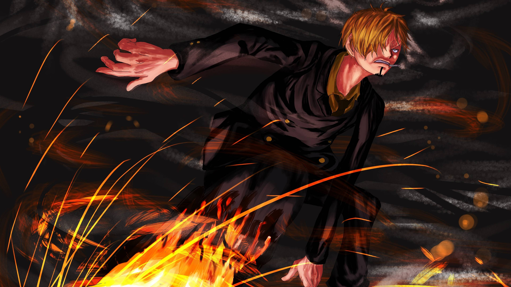
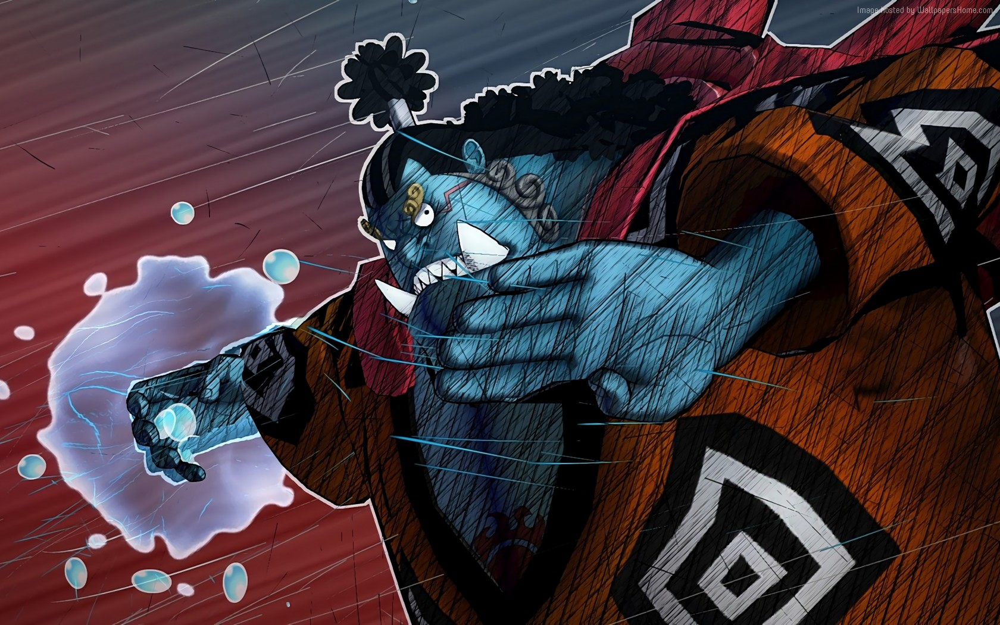
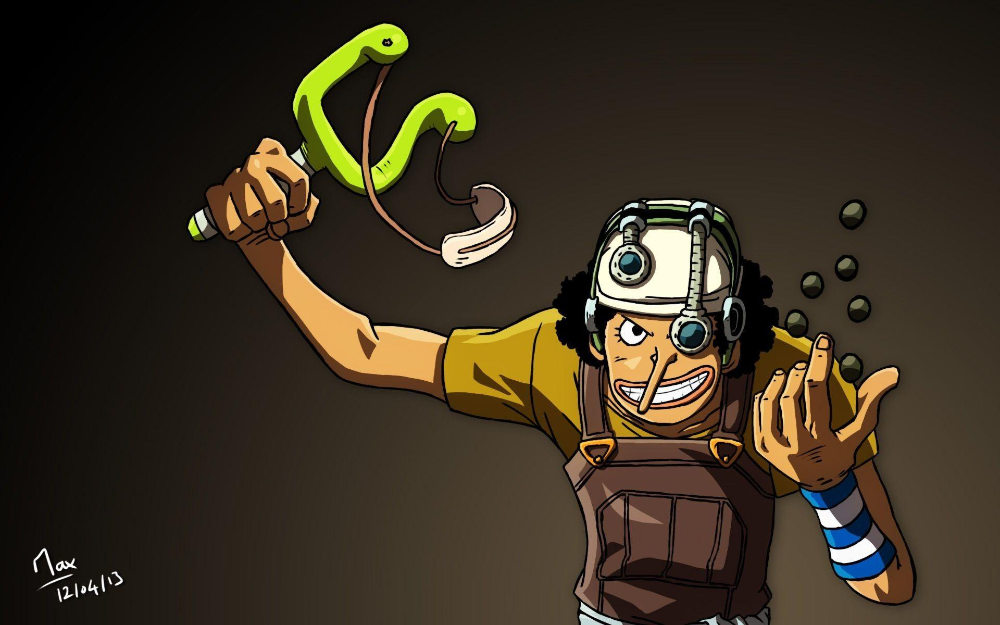
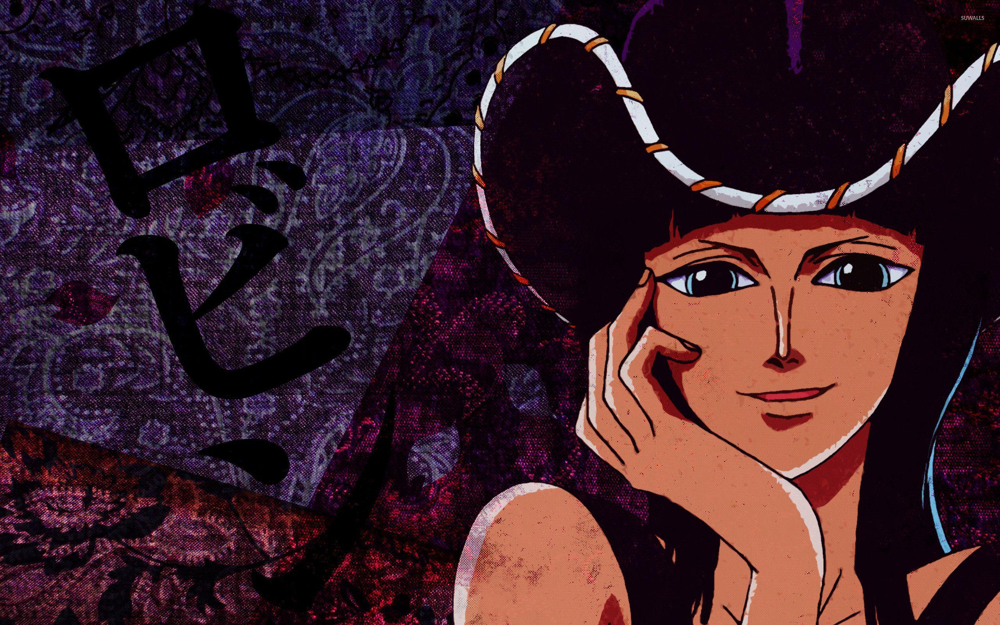
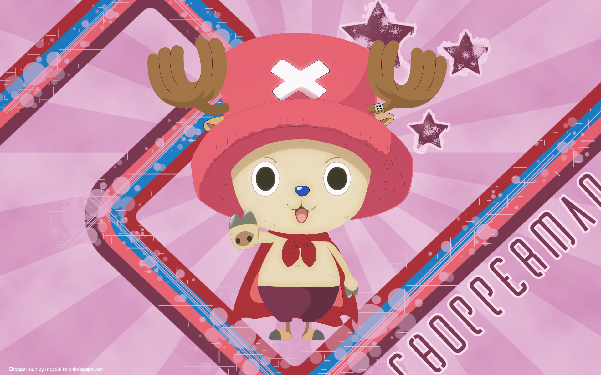
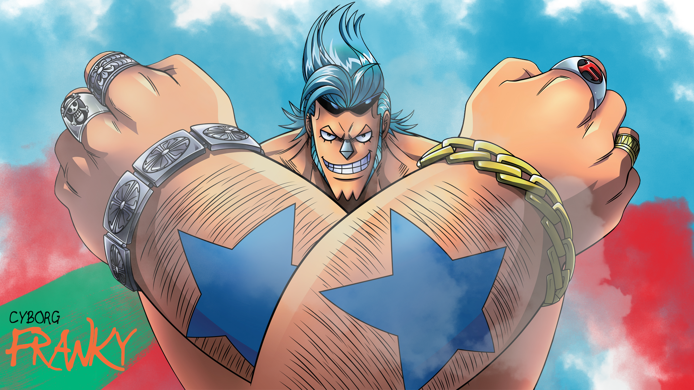

Roronoa Zoro, figura destacada na obra "One Piece", é um membro essencial
dos Chapéus de Palha, liderados por Monkey D. Luffy. Renomado por suas habilidades excepcionais como espadachim,
Zoro almeja conquistar o título de maior espadachim do mundo, superando até mesmo seu mentor, Dracule Mihawk.
A personalidade séria e focada de Zoro se mantém constante, mesmo diante das situações mais críticas. Sua
lealdade inabalável aos amigos é evidente em sua disposição de sacrificar a própria vida para protegê-los. As
técnicas poderosas que desenvolve, como o "Santoryu" e o "Onigiri", são testemunho de seu compromisso em
aprimorar suas habilidades de combate.
A cicatriz distintiva sobre seu olho esquerdo é mais do que uma marca física; é um símbolo do momento em que
Zoro fez um ato heroico para garantir a segurança de seus companheiros. Essa cicatriz torna-se, assim, um
emblema de sua coragem e dedicação à tripulação dos Chapéus de Palha.
No âmbito da narrativa, Zoro não é apenas o principal espadachim da tripulação; ele desempenha um papel crucial
como o protetor, amigo leal e confidente de Luffy e dos demais membros da tripulação. Sua presença é vital para
a coesão da equipe, adicionando uma dimensão humana e emocional à história.
Roronoa Zoro, com sua determinação incansável, habilidades formidáveis e coração leal, contribui
significativamente para o enredo complexo e cativante de "One Piece". Sua busca pelo aprimoramento constante e
seu comprometimento com a tripulação continuam a encantar os fãs ao longo da narrativa épica.

Vinsmoke Sanji
Sanji, membro cativante e multifacetado dos Chapéus de Palha em "One Piece", desempenha papéis cruciais como cozinheiro habilidoso e especialista em artes marciais. Seu sonho de encontrar o lendário All Blue, onde os mares de todos os oceanos convergem, reflete não apenas sua paixão pela culinária, mas também sua aspiração por uma diversidade única de peixes.
Além de suas proezas culinárias, Sanji é reconhecido por suas técnicas distintas de combate, predominantemente baseadas em chutes, o que lhe confere uma elegância e agilidade singulares em batalha. Sua devoção em proteger as mulheres adiciona uma camada intrigante à sua personalidade, enquanto sua rivalidade amigável com Zoro contribui para a dinâmica única da equipe.
Sanji vai além das habilidades marciais e culinárias ao demonstrar uma habilidade de observação aguçada e um coração generoso, enriquecendo a dinâmica dos Chapéus de Palha. Como personagem central na busca pelo One Piece, Sanji não apenas oferece suas habilidades excepcionais, mas também adiciona uma profundidade emocional e relacional que enriquece a narrativa como um todo.
A presença vital de Sanji não apenas dentro da tripulação, mas também na riqueza e diversidade da história, destaca sua importância no cenário épico de "One Piece".

Jimbe
Jimbei, membro notável e respeitado dos Chapéus de Palha em "One Piece", traz consigo uma rica bagagem como hábil mestre em artes marciais e experiente navegador. Sua integração à tripulação, após anos de lealdade como capitão dos Piratas do Sol, destaca não apenas sua habilidade em combate, mas também sua ética sólida e compromisso inabalável com a justiça.
Jimbei é reconhecido por sua maestria no Karatê dos Homens-Peixe, uma técnica poderosa que adiciona uma dimensão única aos confrontos. Além disso, sua experiência como navegador contribui significativamente para a capacidade da tripulação de enfrentar os perigos dos mares. Como timoneiro, Jimbei desempenha um papel crucial na navegação pelos mares tumultuados.
O compromisso de Jimbei com a tripulação é evidente em sua capacidade de manter a calma em situações críticas, oferecendo estabilidade emocional ao grupo. Sua história de vida envolvente e a busca por equidade entre seres humanos e homens-peixe enriquecem a narrativa, enquanto sua presença marcante eleva a tripulação a novos patamares. Jimbei, com sua sabedoria, habilidades únicas e integridade inabalável, continua a desempenhar um papel fundamental na jornada dos Chapéus de Palha.

Usopp
Usopp, o franco atirador dos Chapéus de Palha em "One Piece", é um personagem conhecido por sua habilidade afiada com a zarabatana e sua imaginação fértil. Originário da Vila Syrup, Usopp é um contador de histórias nato e sonhador, muitas vezes envolvendo-se em exageros e contos mirabolantes. Sua ambição é se tornar um bravo guerreiro dos mares, inspirando-se nos feitos lendários de seu pai.
Apesar de suas tendências exageradas, Usopp é um atirador habilidoso e estrategista astuto. Ele contribui para a tripulação não apenas com suas habilidades de combate à distância, mas também como um inventor talentoso, criando dispositivos e armas úteis para situações específicas. A dualidade entre suas histórias fantasiosas e a coragem demonstrada em momentos cruciais adiciona complexidade à sua personalidade.
Usopp, com sua mistura única de humor, imaginação vibrante e bravura oculta, desempenha um papel distintivo nos Chapéus de Palha, enriquecendo a narrativa com suas contribuições únicas e seus momentos de coragem surpreendente. Sua jornada de autodescoberta e busca por reconhecimento continua a ser um elemento cativante na expansiva história de "One Piece".
Nami
Nami, a navegadora extraordinária dos Chapéus de Palha em "One Piece", é uma personagem de destaque com habilidades excepcionais de navegação e meteorologia. Inicialmente apresentada como cartógrafa e navegadora sob a opressão de Arlong, Nami se torna uma integrante essencial da tripulação de Monkey D. Luffy após ser libertada da servidão.
Seu sonho ambicioso é criar um mapa completo do mundo, refletindo sua paixão pela cartografia em cada ilha explorada pelos Chapéus de Palha. Além de suas habilidades técnicas, Nami se destaca por sua astúcia e capacidade estratégica em momentos desafiadores, desempenhando um papel crucial na superação de obstáculos.
A dualidade de Nami como navegadora e estrategista, combinada com sua história complexa e a busca contínua por seu próprio entendimento do mundo, adiciona camadas ricas à sua personagem. Sua presença não apenas garante a segurança da tripulação nos mares perigosos, mas também desempenha um papel significativo na coesão do grupo, tornando-a uma peça fundamental na cativante saga de "One Piece".

Robin
Robin, a arqueóloga erudita dos Chapéus de Palha em "One Piece", é uma personagem marcante conhecida por sua inteligência aguçada e habilidades como arqueóloga. Sua introdução na história como uma agente da organização Baroque Works a serviço de Crocodile, eventualmente se transforma em sua integração na tripulação de Monkey D. Luffy.
Com um passado misterioso e complexo ligado à busca pelos Poneglyphs, antigos artefatos com inscrições, Robin se destaca como uma peça vital na descoberta dos segredos do século perdido e da história do mundo. Sua habilidade única, o "Hana Hana no Mi", permite que ela crie cópias de partes do corpo em superfícies, conferindo-lhe uma versatilidade única em combate e exploração.
A presença tranquila de Robin, combinada com sua natureza reservada e conhecimento profundo, adiciona uma dimensão única aos Chapéus de Palha. Sua contribuição vai além do campo de batalha, enriquecendo a narrativa com suas descobertas arqueológicas e influenciando positivamente a dinâmica do grupo. Robin emerge como uma personagem intrínseca na busca pela verdade e no avanço da tripulação rumo ao One Piece.

Chopper
Chopper, a rena antropomórfica e médica dos Chapéus de Palha em "One Piece", é uma criatura adorável com habilidades médicas notáveis. Inicialmente apresentado como uma rena com a capacidade de consumir a "Hito Hito no Mi", Chopper ganha inteligência humana e habilidades médicas após a ingestão da fruta.
Como o médico da tripulação, Chopper é especialista em medicina e possui conhecimento extenso sobre plantas medicinais. Ele pode transformar-se em diversas formas graças ao "Zoan Human-Human Fruit", permitindo-lhe adaptar-se às situações de combate. Sua forma "Monster Point" é particularmente impressionante em termos de poder bruto.
A inocência e a natureza carinhosa de Chopper, combinadas com suas aspirações de se tornar o melhor médico do mundo, adicionam uma dimensão encantadora ao grupo. Sua relação próxima com os membros da tripulação, especialmente com Luffy, destaca seu papel não apenas como médico, mas como um amigo leal.
Chopper, com sua habilidade médica única e personalidade adorável, representa um componente vital da tripulação dos Chapéus de Palha. Sua jornada de autodescoberta e constante aprimoramento tanto em suas habilidades médicas quanto em suas formas Zoan continuam a encantar os fãs ao longo da emocionante narrativa de "One Piece".
Brook
Brook, o esqueleto músico e timoneiro dos Chapéus de Palha em "One Piece", é uma figura única e carismática. Apresentado como um esqueleto vivo devido ao poder da "Yomi Yomi no Mi", Brook é também um usuário habilidoso da espada e mestre do estilo de luta "Hanauta Sancho: Yahazu Giri".
Com um passado trágico que envolve a tripulação Rumbar Pirates, Brook é o último membro sobrevivente e carrega consigo um senso de solidão e um compromisso com a música. Sua habilidade de tocar violino e sua voz distintiva complementam sua personalidade alegre, tornando-o uma adição única e valiosa à tripulação.
Além de suas habilidades musicais, Brook desempenha um papel fundamental como timoneiro, contribuindo para a navegação dos Chapéus de Palha pelos mares perigosos. Sua presença humorística e positiva, apesar de sua condição não convencional, adiciona leveza à equipe.
Brook, com sua mistura de habilidades marciais, talento musical e atitude otimista, destaca-se como um personagem querido em "One Piece". Sua jornada de superação e busca por um reencontro significativo com seus amigos do passado acrescenta uma dimensão tocante à rica tapeçaria da narrativa.

Franky
Franky, o carpinteiro naval e ciborgue dos Chapéus de Palha em "One Piece", é uma presença imponente e cativante na tripulação. Originalmente conhecido como Cutty Flam, Franky construiu para si mesmo um corpo ciborgue poderoso após um incidente traumático envolvendo o Pluton, um navio de guerra lendário.
Além de suas habilidades impressionantes como carpinteiro naval, Franky é um engenheiro talentoso, responsável pela construção do Thousand Sunny, o navio dos Chapéus de Palha. Seu corpo modificado ciborgue lhe concede força física incrível, e ele é capaz de usar uma variedade de armas incorporadas em seu corpo.
A personalidade expansiva e excêntrica de Franky, combinada com sua lealdade à tripulação, faz dele um membro querido. Seu famoso lema "SUPER" e seu entusiasmo pela construção de coisas grandes e impressionantes refletem sua mentalidade ousada e confiante.
Franky adiciona uma dimensão única à tripulação com seu estilo de vida extravagante, paixão pela construção e uma história de superação pessoal. Seu papel como construtor e protetor da tripulação destaca-se, tornando-o um elemento crucial na busca dos Chapéus de Palha pelo One Piece.